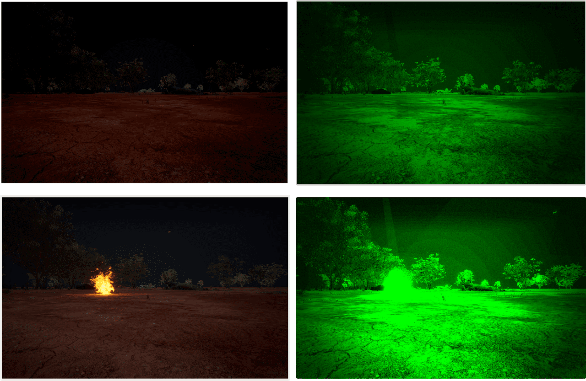
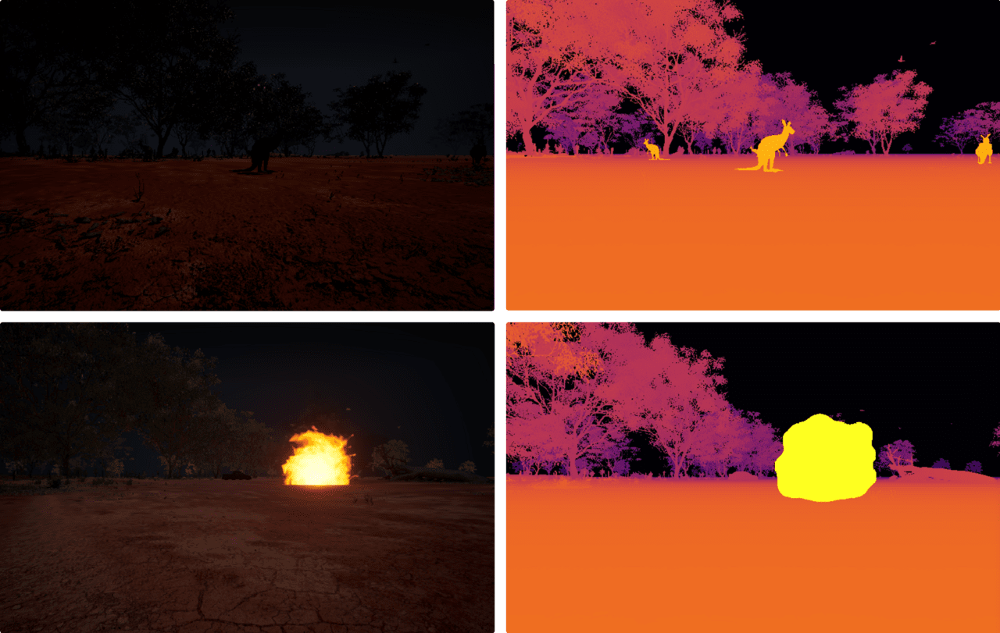
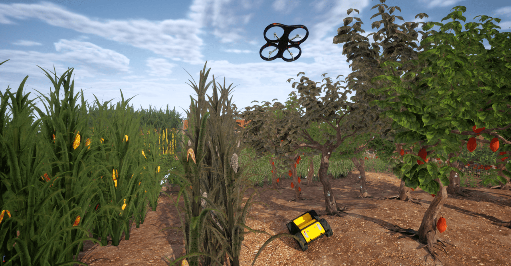

We present HERCULES, a simulation platform for heterogeneous multi-robot autonomy that enables unmanned ground vehicles (UGVs) and unmanned aerial vehicles (UAVs) to collaboratively explore and understand large-scale, complex environments. Built as an advanced fork of AirSim on Unreal Engine 5 (UE5), HERCULES provides a unified autonomy pipeline supporting concurrent UAV–UGV operation, high-fidelity sensing, and large-scale environmental interaction, including offline trajectory generation, kinodynamically feasible motion for both platforms, and complementary coverage and leader–follower trajectory patterns for dataset collection.
A novel autonomous waypoint-tracking UGV controller mirrors UAV interfaces, enabling unified high-level research in exploration and multi-robot coordination. To demonstrate the simulator's utility as a benchmark sandbox, we evaluate state-of-the-art baselines in collaborative SLAM (ROMAN) and collaborative perception (multi-view 3D object detection baselines from DAIR-V2X). Optimized ROS 2 wrappers and lightweight APIs allow seamless development of SLAM, perception, and learning-based algorithms directly on top of this infrastructure.
Three representative environments—desert, forest, and city—along with the option to import georeferenced real-world environments, enable testing algorithms under sparse landmarks, perceptual aliasing, and dynamic obstacles. In addition to the standard AirSim and Cosys-AirSim sensor suite, HERCULES extends thermal and low-light sensing with a physics-based long-wave infrared (LWIR) camera and a configurable night-vision mode. Advanced UE5 assets such as realistic agents, traffic, wildlife, and dynamic environmental phenomena—including fire, flooding, and crop disease spread—are exposed through plug-and-play interfaces for procedural scenario generation. Our open-source code and datasets provide a versatile testbed for advancing heterogeneous multi-robot SLAM, perception, planning, and exploration.
HERCULES ships with three photorealistic worlds—desert, forest, and city—each engineered to stress a different class of perception and planning failure: sparse landmarks and long-range visibility (desert), perceptual aliasing from repetitive geometry (forest), and dense occlusions with dynamic agents (city). Georeferenced real-world scenes can be imported via Cesium for Unreal.
HERCULES exports time-synchronized multimodal data for heterogeneous robot teams. Each dashboard shows, per robot, the RGB, depth, semantic segmentation, and LiDAR streams captured along a coverage or leader–follower trajectory in one of our environments.
We benchmark ROMAN collaborative SLAM on a City Block sequence with two UAVs and two UGVs. Each robot runs LIO-SAM odometry with an open-set ROMAN object map; inter-robot loop closures are registered pairwise via CLIPPER.
Beyond the inherited Cosys-AirSim sensor suite, HERCULES adds physics-based long-wave infrared (LWIR) and night-vision (NVG) cameras, and three classes of dynamic environmental phenomena that update the shared world state at runtime.

Night-vision (NVG)

LWIR thermal
